A huge catalogue, and a third of people leaving empty-handed
Disney+ Hotstar is India's leading streaming service, with over 300 million active users and 50 million subscribers. In January 2020 the data showed something uncomfortable: on an average day, 35% of the people who came in couldn't find anything they wanted to watch, and left without streaming a single title.
That was despite more than 7,000 premium titles from Marvel, Star, ABC, HBO and Disney.
- Daily drop-off
- 35% Visitors who left without streaming a title.
- Catalogue
- 7,000+ Premium titles across Marvel, HBO, Disney, ABC and Star.
- Audience
- 300M Active users, 50M of them subscribers.
People who watched had looked around first
We split sessions by whether they ended in a stream. The difference was how much people sampled: opened a title's details page to read about it or watch the trailer.1Correlation firstThis only shows that sampling and watching travel together. Browse Sheet 1.0 was built as an experiment to test whether making sampling easier would cause more watching.
Titles sampled per session, January 2020.
The finding85% of people who sampled more than five titles ended up watching something.
Every preview was a round trip
So why weren't people sampling more? In the existing flow, checking a title meant tapping a thumbnail, waiting for a new details page to load, judging it, and tapping back to the feed. Poster thumbnails are great hooks, but people need a little more upfront (genre, synopsis, release date) to know whether they're interested.
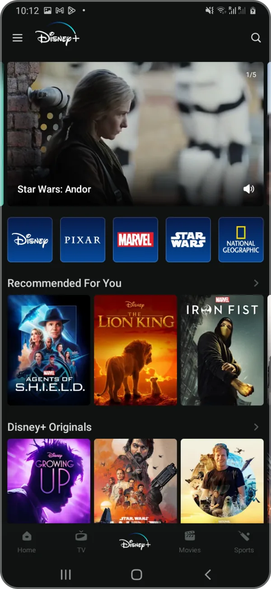
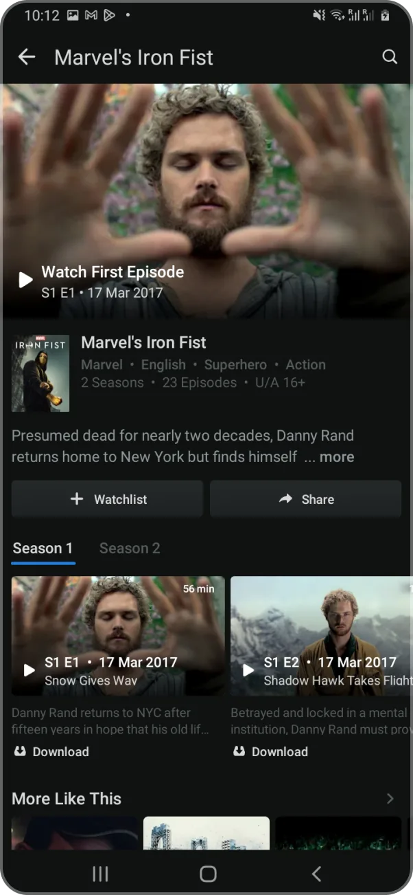
Thumbnails work beautifully elsewhere. A photo gallery is a wall of thumbnails too, and nobody hesitates to open a photo. The difference is what it costs to look and leave.
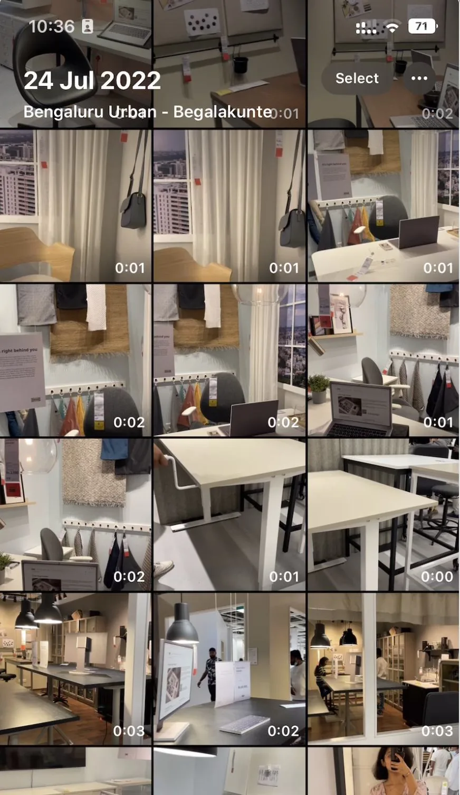
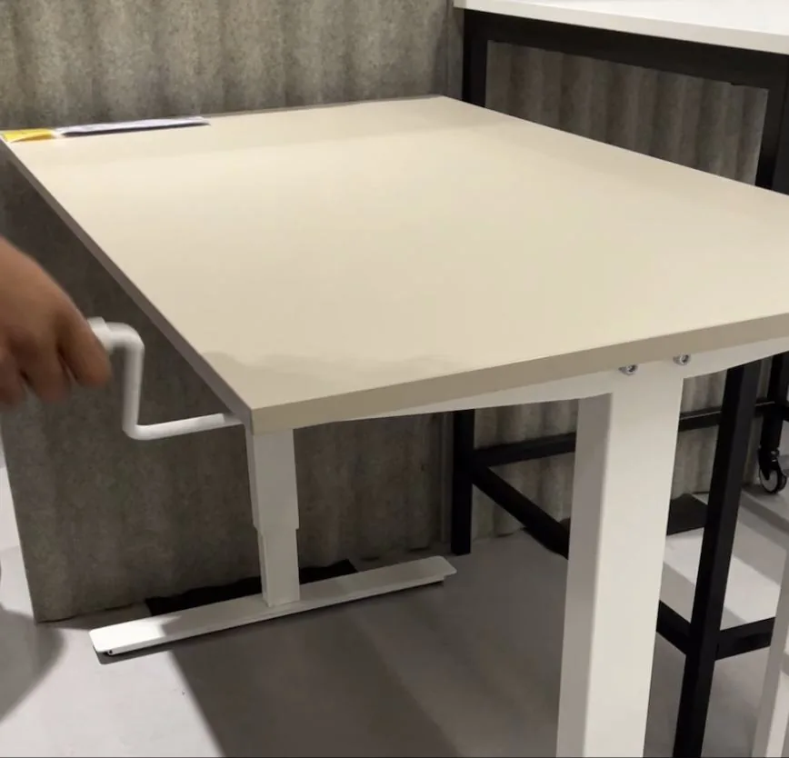
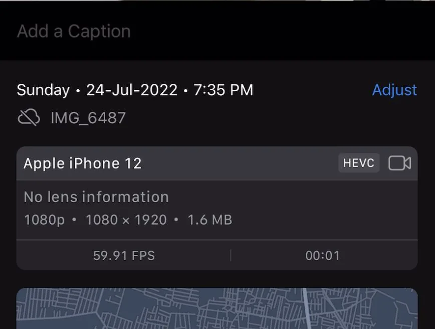
HypothesisReducing the interaction cost of a preview will increase sampling, and more sampling will lead to more watching.
A preview that slides over the feed instead of replacing it
The experiment moved the title's pitch into a light sheet on top of the home feed: an autoplaying trailer, key information up front, a short synopsis, a watchlist action, and a way into episodes on the full details page.


A sheet over a feed raises its own problems, and I had to solve them before the experiment could be trusted.2Why it matteredIf people couldn't work out how to leave the sheet, a drop in sampling would tell us about the sheet's affordances, not about the hypothesis.
How do I get back?
Because the sheet sits on top of the feed, dismissal had to be obvious.
Where was I?
It had to keep enough of the home feed in view to feel reversible.
Buttons in a row don't scale
Longer labels and secondary actions needed real hierarchy, not equal buttons.
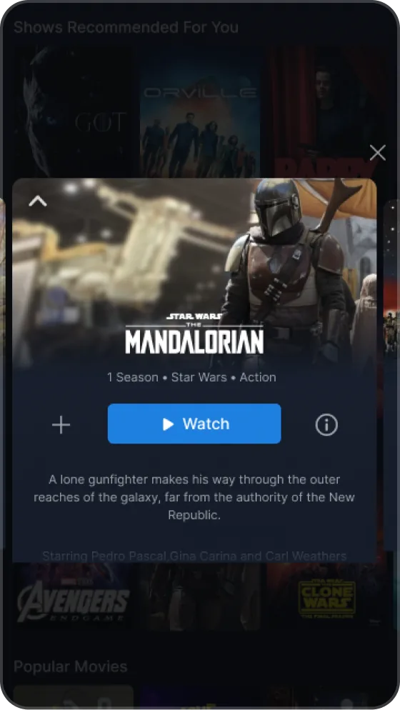
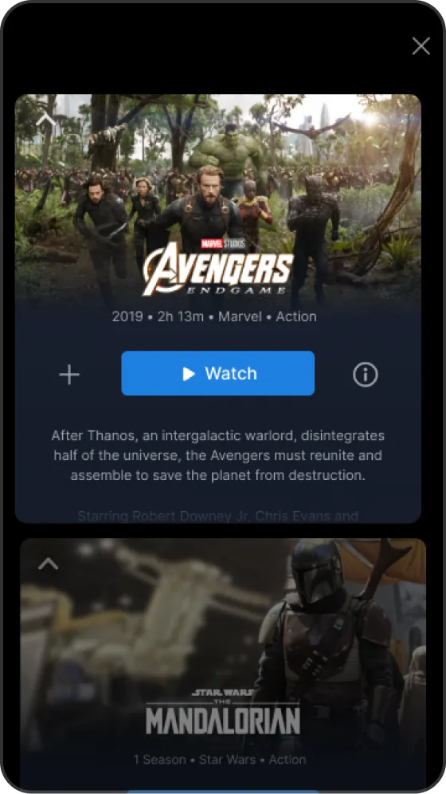
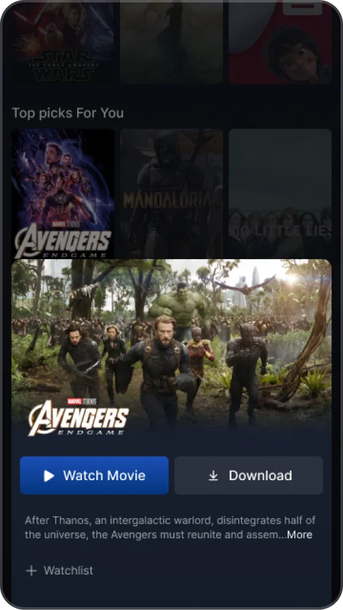
Three of the top explorations for dismissal, context and action hierarchy.
The experiment proved the hypothesis:
- Distinct titles viewed
- +35% Sampling jumped once titles could be previewed in place.
- Successful home sessions
- +8% More journeys went from home to details to watching.
- Watch time per user
- +1.6% Small as a percentage, large at this scale.
- Watchlist adds
- +16% People saved more titles after a cheaper preview.
The numbers that didn't go our way
The headline metrics were good. Three smaller ones told us what to do next.
- Swiped up for more
- 5% Of people on the sheet tried to swipe up to the full details page. Technical constraints meant we couldn't build that in time.
- Show starts
- −0.7% Shows ask for more commitment than movies, and the sheet didn't carry enough information to start one confidently.
- Downloads
- −3% The upfront download button on the details page wasn't in the test experience.
The 5% was the important one. People were already trying to pull the sheet further, so the next step wasn't a better sheet over a page. It was the sheet as the page.3TimingThe learnings landed just as the whole platform was being redesigned from the ground up, which let us rethink the whole content details experience instead of patching the old one.
How might wepresent the most intuitive, inviting and personalised pitch for a piece of content?
Ranking what actually makes someone press play
We had the container. Now we needed what goes in it. With two researchers, I ran interviews and a card-sorting exercise on the factors that help people decide whether to watch a movie or show.
- The X factorAwards, nominations, popularity, a friend's recommendation: why it's worth your attention.
- TrailerAn instant sense of tone, production value and fit.
- Genres & studioFamiliar categories and brands map a title to your taste quickly.
- Duration & episodesCan I finish this in the time I have?
- SynopsisUseful, but only if it's short enough to scan.
- CastSurprisingly low for streaming, compared with film and TV listings.
- Release dateFreshness matters, but rarely decides on its own.
Card sort, most to least important.
Then we audited the existing details page against those expectations. Five problems came up again and again:
- The autoplaying trailer was mistaken for the actual content.
- The watch button wasn't clear and got lost in the noise.
- Long descriptions were the part people skipped most.
- There was no information about when new episodes would drop.
- Horizontal episode navigation was hard to move through.
350 explorations, and the ones that made it
Over four months I worked through 350+ explorations and 20+ user interviews, then brought product, business and research into the room to make sure the layout served users and business goals. Our best bets went back to users in a validation study before launch.
What should the page ask you to do first?
Watch, among everything else
The watch button sat between an autoplaying trailer and rows of metadata and actions.
In the audit, people lost it in the noise, and some thought the trailer was the show.
One clear, upfront watch button
A full-width primary action directly under the title, with secondary actions demoted below it, and the trailer clearly labelled as a trailer.
The page exists to get you to press play. Everything else supports that decision.
Watchlist and download became quieter. We expected watchlist adds to drop. They went up 7%.
How do you move through a season?
A horizontal episode rail
Episodes scrolled sideways in a row of thumbnails, one season at a time.
Hard to scan, hard to find your place, and it hid the information people use to commit to a show.
A vertical list, and a status callout
Episodes became a vertical list with season tabs. Running shows got a dedicated callout for the next episode date and release frequency.
Shows were where 1.0 fell short. People need to see what they're committing to.

A vertical list takes more room, so a show's page runs longer than a movie's.
Every other part of the layout traces back to a specific piece of research:
| Where it came from | What it changed |
|---|---|
| Card sort | Layout order mirrors decision priority: trailer, title and USP, genres, duration and release, synopsis, cast. |
| Audit | Long synopses backed by short, scannable metadata. |
| Stakeholders | The USP line and secondary action became backend-configurable, so teams could test popularity, recommendations, ratings, downloads or plan upsells without a release. |
| Validation | Because the title floats above the sheet, some people didn't read it as a sheet. A dragger handle gave it the affordance it was missing. |
One system for movies, shows and everything below the fold
The final design handles movies, shows, the details below the fold and episode navigation, while keeping the light, swipe-away behaviour that made sampling cheap in the first place.


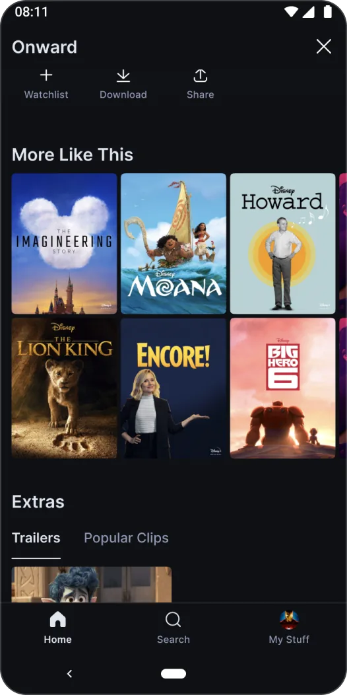
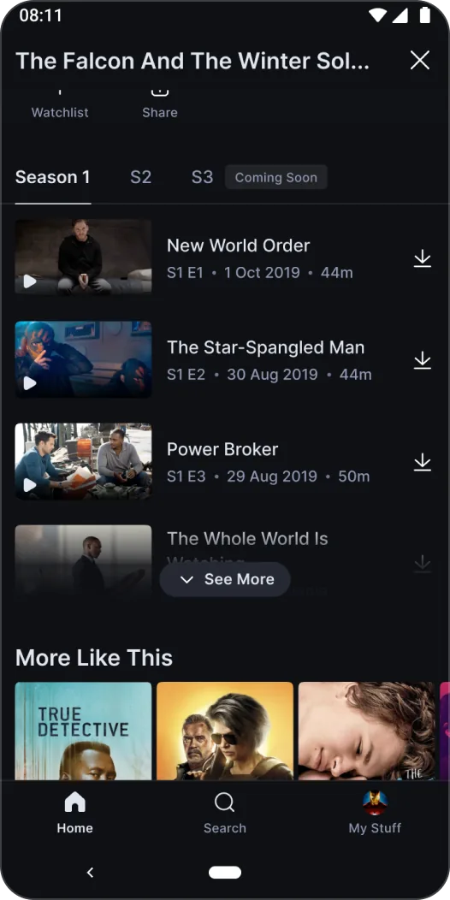
The weak spot became the strongest number
Browse Sheet 2.0 launched in developing markets including South Africa and the Middle East. We measured it against Browse Sheet 1.0 in comparable markets such as Thailand and Malaysia.
- Distinct titles started
- +4% Movies and shows, against 1.0.
- Watchlist adds
- +7% A surprise, since watchlist is less prominent in 2.0.
- Show starts
- +6.2% Reversing 1.0's −0.7% for shows.
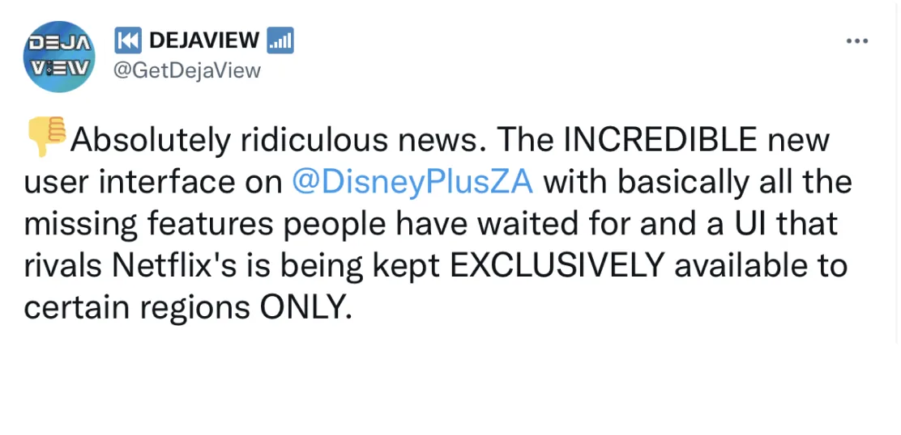
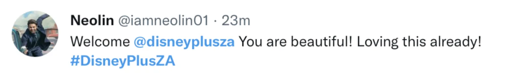
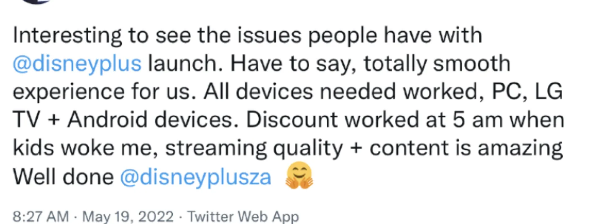
Unprompted feedback after launch.
India, with over 300 million users, was next. Based on the early launches, we projected:4ProjectionsThese are forecasts from the early markets, not measured results in India.
- Distinct titles started
- +15% Projected.
- Successful home sessions
- +3% Projected home → details → watch.
- Watchlist adds
- +12% Projected.
What I'd keep, and what I'd change
Make curiosity cheap before making it rich.
The first win didn't come from better content on the page. It came from making the page cheaper to open and leave. Only once looking was cheap did it pay to work on what people saw.
Ship an experiment, then a system.
Browse Sheet 1.0 was deliberately small. Its metrics, especially the ones that went the wrong way, gave the platform redesign a brief nobody could argue with: the 5% who swiped up, and the shows that didn't start.
Treat downloads as a guardrail from day one. The experiment dropped the upfront download button, and downloads fell 3%. For people who download to watch later, that button was the reason to open the page. Next time I'd keep paths people rely on in the test, or at least watch them as closely as the metric we're trying to move.